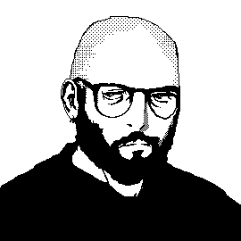

Lateralis Heavy Industries 
My name's Nate. I'm a game developer and musician. My goal is to try and make really good games. PATREON BLUESKY MUSIC If you are a publisher and are interested in my work, reach out. test